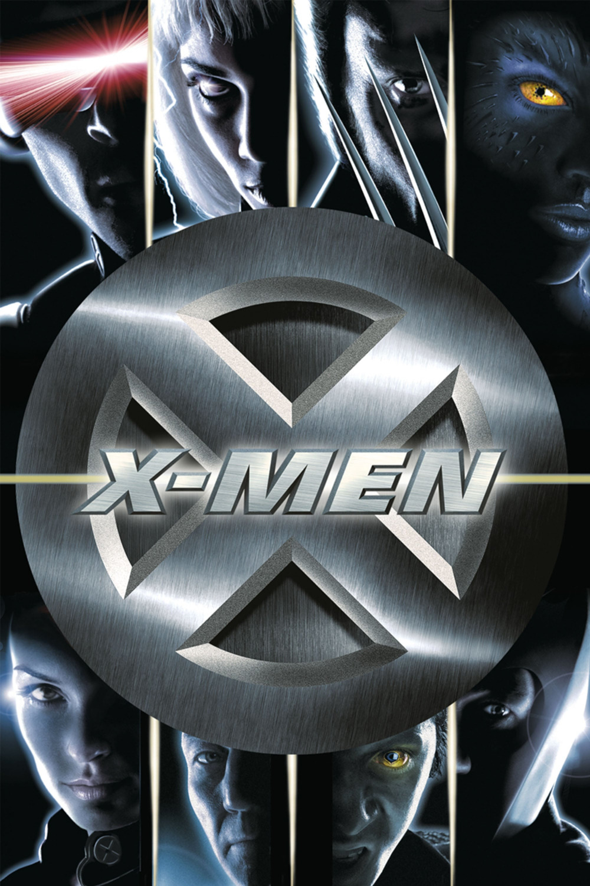

Мировая премьера: 14 июля 2000
Слоган: Мы не то, что вы думаете.
Сюжет: Они – сверхлюди, новое звено в цепи эволюции. Каждый из них был рождён в результате уникальной генетической мутации, наделившей их с детства необыкновенными и опасными способностями. В мире, где царят предрассудки, этих изгоев ненавидят и боятся, те, кто не способен понять и принять их индивидуальность. Под руководством профессора Чарльза Завьера ученики-мутанты научились контролировать свои способности и управлять ими в интересах человечества. Но могущественный Магнито не верит, что люди и мутанты когда-либо смогут мирно сосуществовать. Он разработал план, чтобы осуществить захват власти, и теперь только ученики профессора Завьера смогут защитить этот мир.
Режиссёр: Брайан Сингер
В основе: Комиксы о Людях Икс (США, выходят с 1963, издательство "Марвел Комикс")
Серия: Люди Икс
В ролях: Хью Джекман, Патрик Стюарт, Иэн МакКеллен
| Хью Джекман | Логан / Росомаха |
| Патрик Стюарт | Профессор Чарльз Завьер / Профессор Икс |
| Иэн МакКеллен | Эрик Леншерр / Магнито |
| Анна Пакуин | Мари / Роуг |
| Фамке Янссен | Доктор Джин Грей |
| Джеймс Марсден | Скотт Саммерс / Циклоп |
| Хэлли Берри | Ороро Манро / Шторм |
| Брюс Дэвисон | Сенатор Роберт Келли |
| Ребекка Ромейн-Стамос | Рейвен Даркхолм / Мистик |
| Рэй Парк | Мортимер Тойнби / Жаба |
| Тайлер Мэйн | Виктор Крид / Саблезубый |
| Шон Эшмор | Бобби Дрейк / Айсберг |
Бюджет: $ 75 млн.
Кассовые сборы в США: $ 157 млн.
Кассовые сборы в мире: $ 296 млн.
Продолжительность: 1 ч. 35 мин.
Рейтинг: 7.3